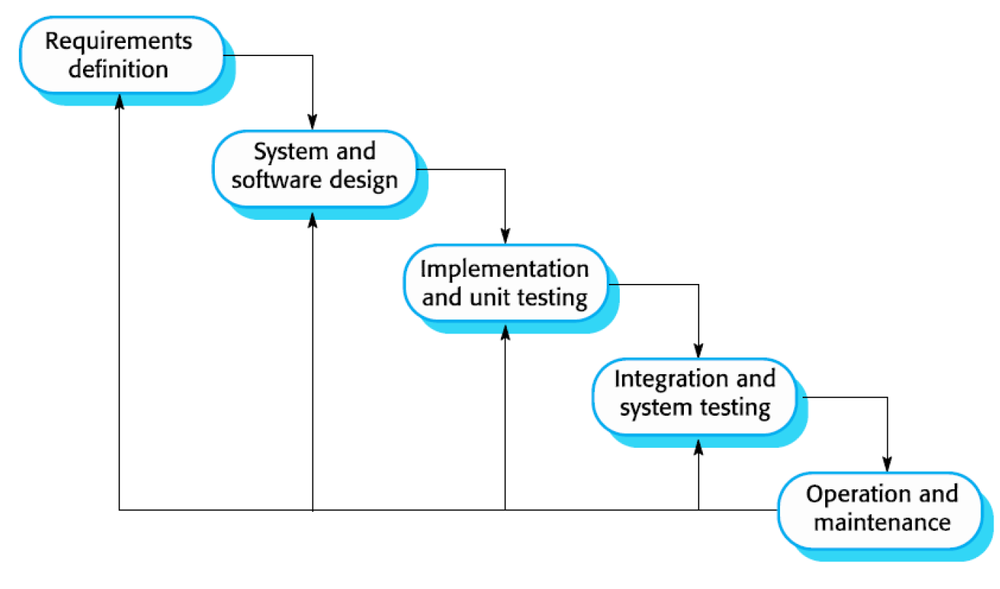
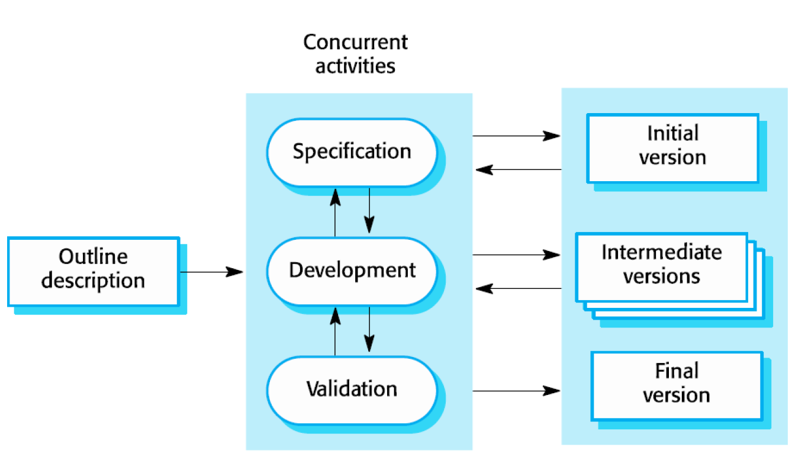
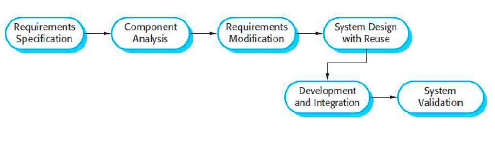
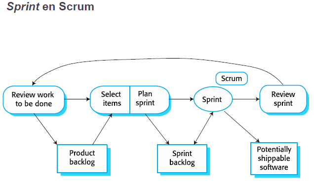
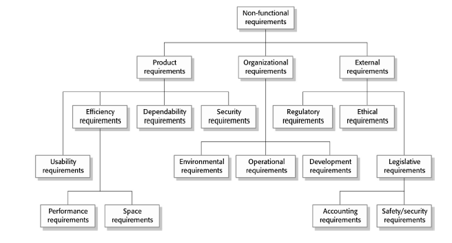
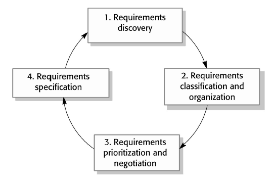
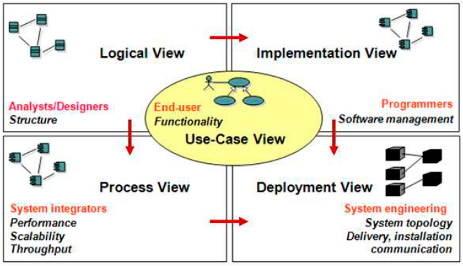

El software no s'espenya, es deteriora. Mentre que el hardware si que s'espenya.
Errors més comuns:
Augment de la complexitat dels sistemes informàtics.
Mal ús dels mètodes d'enginyeria del software.
Desenvolumpament de software profesional
Què és el software?
Programes d'ordinador amb la seva "documentació" associada. Els productes de software poden anar destinats a un client en particular o al mercat general.
Què és l'enginyeria del software?
És una disciplina d'enginyeria que tracta tots els aspectes de la producció de software que inclou tècniques de suport a l’especificació, el disseny i l’evolució de les aplicacions informàtiques però també inclou tècniques que poden no ser adequades en un desenvolupament de software individual.
Costs
Aproximadament: 60% Desenvolupament, 40% Proves
Quines són les millors tècniques i mètodes d'enginyeria del software?
No hi ha a causa de la diversistat del camp. Hi ha molts de tipus diferents de sistemes i cada un requereix d'eines i tècniques apropiades pel seu desenvolupament.
Tipus de productes de software
Productes genèrics:
Sistemes independendents que venen a qualsevol client que els vulgui adquirir i per tant l'especificació i les decisions sobre canvis del software és propietat del desenvolupador.
Productes personalitzats:
Softwatre que es personalitza per a un client concret. Ha de satisfer les necessitats específiques del client i les decisions sobre canvis del software és propietat del client.
Atributs essencials del software
Facilitat de mantenient: El software s'ha d'escriure de tal manera que pugui evolucionar per satisfer les necessitats canviants dels clients. Atribut crítica, que els canvis en el software són un requisit inevitable.
Confiança i seguretat: La confiança inclou un conjunt de característiques tal com la fiabilitat i la seguretat (security & safety). Els sistemes no han de causar danys físics o econòmics en cas de falla. També han de controlar l'accés a usuaris no autoritzats.
Eficiència: El software no ha de malgastar recursos.
Acceptabilitat: El software ha de ser acceptat pels diferents tipus d'usuaris pels quals s'ha dissenyat.
Principis d'ètica
Les assosicacions professionals publiquen codis de conducta on s'exposen els estàndards de comportament dels seus membres.
2. Processos de software
Part I - Models de processos de software
Procés de software
Els processos de software són les activitats involucreades en la producció d'un sistema de software. Els models de processos de software són representacions abstractes d'aquests processos.
Activitats:
Especificació: definició de la funcionalitat i les restriccions del software.
Disseny i implementació: creació del software que satisfà les seves especifiacions.
Validació: el sofware s'ha de validad per assegurar que satisfà les necessitats del client.
Evolució: el software ha d'evolucioar per adaptar-se a les necessitats del client.
Descripcions de processos de software
Per descriure un procés parlam de les activitats que inclou, pero també pot incloure:
Productes: que són les sortides d'una activitat del procés
Rols: que mostren la responsabilitat de les persones implicades en el procés.
Pre-condicions i post-condicions: que són declaracions vàlides abans i després d'una activitat del procés.
Permet que els diferents processos es realitzin de manera concurrent.
Tipus de processos
Dirigits: per una planificació són aquelles en els que les activitats es planifiquen en endavant i el progrés es mesura respecte de la planificació. Inclouen activitats de seguiment.
Àgils: la planificació és incremental i es més fàcil canviar el procés per reflectir els requisits canviants dels clients.
Models de procés de software
Els models de processos genèrics descriuen l'organització dels processos de software.
Model en cascada

És un model dirigit per la planificació on separa les dades d'especificació i desenvolupamnet. Una fase ha d'estar completa abans de poder passar a la següent.
Fases:
Especificació i anàlisi de requisits
Disseny del software i del sistema
Implementació i proves unitàries
Integració i proves del sistema
Operació i manteniment
Ús: Quan els requisits s'entenen bé i sap que no es canviaran radicalment durant el disseny.
Avantatges:
La documentació produïda a cada fase fa visible el procés.
Els gestors poden monitorizar el progrés respecta a la planificació.
Inconvenients:
Els acords s'han de dur a terme en les etapes iniciales i es fa difícil respondre als canvis
Inflexibilitat (Divisió en etapes).
Desenvolupament incremental

L'especificació, el desenvolupament i la validació es solapen. Pot ser dirigit per un procés de planificació o àgil.
Fases:
Especificació
Desenvolupament
Validació
Ús: En un projecte petit i quan no es tenen molt clars els requisits funcionals.
Avantatges:
Es redueix el cost d'incorporar els requisits canviants del client
És més fàcil obtenir feedbak del client sobre la feina de desenvolupament que s'ha fet
És possible entregar i desenvolupar software útil per al client ràpidament.
Inconvenients:
El procés no es visible
Incorporar més canvis en el software esdevé car i difícil.
Enginyeria del software orientada en la reutilització

El sistema es cconstrueix assemblant components ja existents. Pot ser dirigit per un procés de planificació o àgil.
Fases:
Especificació
Anàlisi dels components
Modificació dels requeriments
Diesseny del sistema amb reutilització
Desenvolupament i integració
Validació del sistema
Ús: La a reutilització es avui el mètode estàndard per construir molts tipus de sistemes empresarials
Avantatges:
Reducció del cost i del risc, ja que es desenvolupa menys software desde zero.
Lliuraments i desplegament més ràpid del sistema.
Inconvenients:
Pèrdua de control sobre l'evolució dels elements reutilitzats.
Cert compromís amb els requisits i pot ser que el sistema no satisfaci les necessitats reals dels usuaris.
Flexible:
Els requisits es poden modificar per adaptar-los als components disponibles.
A la práctica, els sistemes grans es desenvolupen seguint un procés que incorpora elements de tots aquests models.
Activitats del procés
Els processos de software real són seqüències entrellaçacdes d'activitats tècniques, col·laboratives i administratives amb l'objectiu general d'especificar, dissenyar, implementar i provar un sistema de software.
Quatre activitats bàsiques de software:
Especificació
És el procés on es defineixen els serveis del sistema i les restriccións del funcionament i desenvolupament.
Definir les necessitats de tots els perfils dels clients.
Procés d'enginyeria de requisits.
Proces:
Obtenció i anàlisi de requisits.
Especificació de requisits
Validació de requisits
Disseny
Procés de convertir l'especificació del sistema en un sistema executable.
Dissenyar una estructura de software que compleixi amb l'especificació
Entrades de disseny:
Informació de la plataforma
Especificació de requisits
Descripció de dades
Activitats de disseny
Disseny aquitectònic: S'identifica l'estructura del Sistema, els seus principals components (mòduls o subsistemes), les seves relacions i com estan distribuïts.
Disseny d'interfícies: Es defineixen les interfíciens entre components de sistema
Disseny i selecció de components: Es cerquen components reutilitzables. Si no n'hi ha de disponibles, es creen.
Disseny de bases de dades: Es dissenya l'estructura de les dades i com es representan a la base de dades.
Sortides de disseny
Arquitectura del sistema
Especificació de la base de dades
Especificació de la interfície
Especificcació de components
Implementació
Les activitats de disseny i implementació están molt relacionades i es poden solapar
La programació és una activitat indivitual i no compta amb un procés estàndard
La depuracio (debugging) consisteix en trobar error i corregir-los.
Validació
La validació de software és el procés de comprovar que el sistema es conforme amb la seva especificació o satisfà les necessitats reals dels seus usuaris.
Inclou provar el sistema i avaluar i revisar els processos.
Les proves del sistema impliquen executar el sistema amb casos de prova.
Canvis
L'evolució del software té lloc quan es canvia un software existent per satisfer nous requisits. El software ha d'evolucionar per continuar sent útil
Els canvis són inevitavles i a més a més en projectes de sofware.
Els canvis empresarials poden donar lloc a canvis en els requisits a nous requisits.
Reducció del cost
Anticipar-se als canvis: El procés de software inclou activitats que poden anticipar possivles canvis.
Tolerància als canvis: El procés està dissenyat de tal manera que els canvis es poden incorporar a un cost relativament baix.
Maneres d'afrontar canvis
Prototipus del sistema:
Una versió del sistema o d'una part del sistema es desenvolupa ràpidament per avaluar els sequisits del client i la viabilitat de les decisions de disseny. Aques mètode es basa en l'anticipació.
El prototipus és una versió inicial d'un sistema que s'empra per demostrar els conceptes i provar opcions de disseny, Es pot emprar en:
El procés d'enginyeria de requisits: per ajudar a l'obtencio i validació dels requisits.
El procés de disseny: per explorar opcions i desenvolupar el disseny de la interfície.
Beneficis
Millora la usabilitat del sistema
Millora la qualitat del disseny
Millora la facilitat de manteniment
Redueix l'esforç de desenvolupament
Pot ser que el prototipus no inclogui gestió d'errors.
Es centra en els requisits funcionals en comptes dels no funcionals (per exemple, seguretat i fiabilitat).
Els prototipus s'han de descartar després del desenvolupament, ja que no són una bona base per a un sistema de producció.
Entrega incremental:
Els increments del sistema s'entreguen al client perquè pugui expermientar amb ells i fer comentaris. Aquest mètode es basa en la tolerància als canvis i com evitar-los
En lloc d'entregar el sistema en una única entrega, el desenvolupament i l'entrega se separen en increments.
Els requisits d'usuari es prioritzen i els més prioritaris s'inclouen en els primers increments.
Una vegada ha començat el desenvolupamment d'un nou increment, els requisits es congelen per a futurs increments.
Desenvolupament incremental
Es basa en desenvolupar el sistema mitjançant increments i avaluar cada increment abans de passar al següent increment.
Enfocar per ser empran en mètodes àgils.
Entrega incremental
Deplegar un increment per a que els usuaris finals el puguin emprar
Avaluació més realista sobre l'ús del software en la pràctica
Difícil d'implementar en el cas d'un nou sistema que substitueixi a un sistema anterior ja que els increments ofereixen menys funcionalitats que el sistema reemplaçat.
Avantatges
Amb cada increment s'aporta valor al client oferint una nova funcionalitat
Els primers increments poden servir com a prototipus per ajutar a obtenir nous requisits
El projecte té menys risc de fracàs
Els serveis més prioritaris son els que més se proven.
Inconvenients
L'especificació es desenvolupa conjuntament amb el sofware (no hi ha una especificació inical fixa)
Part II - Mètodes àgils
Desenvolupament àgil
L'objectiu del desenvolupament àgil es reduir el temps d'entrega del sistemes de software.
L'especificació, el disseny i la implementació estan entrellaçades.
El sistema es desenvolupa com a una sèrie de versions o increments amb els participants involucrats en l'especificació i avaluació de les versions.
Documentació mínima, se centren en el codi.
Entregues freqüents de noves versions per a la seva avaluació.
Mètodes àgils
Se centren en el codi enlloc del disseny
Es basen en un mètode interactiu
Tenen com a propòsit reduir la despesa del procés de software, limitant la documentació sent capaços de responde ràpidament a canvis sense una feina excessiva.
Principis:
Participació del client
Entrega incremental
Persones, no processos (mitjançant programaciço en parelles, propietat col·lectiva i evitant jornades de feina excessives.)
Adoptar canvis
Mantenir la simplicitat
Aplicabilitat: S'aplica a empreses de sofware que desenvolupen un producte petit o mitjà.
Tècniques de desenvolupament àgil
Programació extrema - XP
Un mètode àgil que va tenir molta influència en els 90s. Introdueix tota una sèrie de tècniques àgils.
Pràctiques clau:
Històries d'usuari
Refactorització
Planificar les proves
Programació en parelles
Pràctiques de XP:
Planificació incremental
Entregues petites
Disseny simple
Planificar primer les proves
Entorn automàtic per escriure el procés per a noves funcionalitats
Refactorització de codi
Programació en parellees
Propietat col·lectiva (els desenvolupadors treballen en totes les àrees del sistema)
Integració continuada (tot d'una que una tasca està completa s'integra en el sistema)
Jornades de treball productives (no massa llargues)
Participació del client
Scrum

Scrum és un mètode àgil que se centra en gestionar el desenvolupament iteratiu enlloc
de centrar-se en aspectes tècnics específics.
Es centra en un conjunt de sprints que són períodes de temps prefixats durant el que es
desenvolupa un increment del sistema.
Fases:
Fase inicial: és una planificació d'alt nivell en la que es defineixen els objectius generals del projecte i es dissenya una arquitectura de software.
Fase intermitja: es duen a terme sèries de cicles (sprints). En cada sprint es desenvolupa un increment del sistema.
Fase final: es completa la documentació i s'avaluen les lliçons apreses durant el projecte.
Un cicle / sprint
Duració entre 2 i 4 setmanes
El punt de partida per a la planificació es el product backlog que es la llista de feina a fer.
Durant la fase de selecció tot l'equip del projecte treballa amb el client per seleccionar les característiques i la funcionalitat del product backlog a desenvolupar durant l'esprint.
Beneficis
El producte es divideix en una llista de parts que es puguien entendre i gestionar amb facilitat
tot l'equip té visibilitat de tot i la comunicació entre membres millora
Els clients veuen l'entrega d'increments i obtenen feedback de com funciona el producte
Es crea un clima de confiança entre clients i desenvolupadors. Es cre una cultura positiva en la qual tots esperen que el producte sigui exitós.
3. Enginyeria de requisits
El procés de descobrir,analitzar,documentarirevisar els serveixiles restriccions d'un sistema. Un projecte de software és bàsicament la transformació d'un conjunt de requisits en un sistema informàtic. Establir amb exactitud els requisits d'un sistema és un principi essencial per dur a terme amb èxit un desenvolupament de software.
Requisits funcionals i no funcionals
Requisits d'un sistema
Descripcions que el sistema hauria de fer. En aquests requisits es reflecteixen les necessitats dels clients cap el sistema
Requisits d'usuari
Són definicions en el llenguatge natural i diagrames que mostren els serveis que s'espera que el sistema proporcioni als usuarios i també les restriccions que aquest té.
Requisits en els mètodes àgils
Requisits fucionals:són afirmacions sobre els serveis que el sistema ha de proporcionar o són descripcions de com s'han de dur a terme determinats càlculs.
Requisits no funcionals: restriccions dels serveis o funcions que el sistema ofereix. Inclouen restriccions temporals, restriccions del procés de desenvolupament i restriccions imposades per estàndards. Normalment fan referència al sistema en la seva totalitat, en comptes de característiques o serveis individuals del sistema. Classificació de requisits no funcionals:
Requisits del producte: Especifiquen o restringeixen el comportament del software. Per exemple: requisits de rendiment, temps de resposta, fiabilitat, seguretat o usabilitat.
Requisits de l'organització: Requisits de sistema derivats de polítiques i procediments en l'empresa del client i del desenvolupador. Per exemple: mediambientals, estàndards de processos, etc.
Requisits externs: Requisits derivats de factors externs al sistema i el seu procés de desenvolupament. Per exemple: ètics, regulatoris, legislatius, etc.

Processos d'enginyeria de requisits
Els processos d'enginyeria de requisits varien depenent del domini de l'aplicació, les persones implicades i l'empresa de desenvolupament. Les activitats genèriques són:
Adquisició i anàlisi de requisits (descobrir els requisits)
Especificació de requisits
Validacció de requisits
Gestió de requisits
A la pràctica es tracta d'un procés iteratiu en el qual aquestes activitats se solapen.
Adquisició i anàlisi de requisits
Hi ha diverses tècniques d'adquisició de requisits com les entrevistes o l'etnografia. Les històries d'usuari i els escenaris s'empren per promoure la discussió entre els participants.
Fases
Descobriment de requisits: Interactuar amb els participants del sistema per descobrir els seus requisits.
Classificació i organització de requisits: Agrupar els requisits relacionats i organitzar-los en grups coherents.
Priorització de requisits: Prioritzar els requisits, trobar i resoldre conflictes mitjançant la negociació.
Especificació de requisits: Els requisits es documenten i entren en la següent volta de l'espiral.

Document de requisits de software
Es la declaració oficial del que s'ha de desnevolupar
Ha d'incloure tant la definició dels requisits d'usuari com l'especificació dels requisits de sistema
Els requisits de sistema son emprats pels enginyers de software com a punt de partida per dissenuyar el sistema.
Ha de especificar qué ha de fer el sistema, però no com.
No és un document de disseny
Tipus de tècniques de documentació
Plantilla per a una especificació estructurada
User stories
Diagrama de casos d'ús: Aquest representa els requisits funciunals, d'usuari i de sistema on els elements que tenim son els usuaris que interactuen amb el sistema, l'usuari final no sempre ha de ser humà. També apareixen les diferents funionalitats dels usuaris
Validació de requisits
Tècniques de validació de requisits
Revisions de requisits: Anàlisi manual sistemàtic dels requisits.
Prototipat: Emprar un model executable del sistema per avaluar els requisits.
Generació de casos de prova: Desenvolupar proves per als requisits.
Canvis en els requisits
Els canvis empresarials i tècnics inevitablement provoquen canvis en els requisits dels sistemes de software. La gestió de requisits és el procés de gestionar i controlar aquests canvis.
4. Modelat del sistema
Modelat
Maneres d'emprar un model
Com a mitjà per discutir sobre un sistema existent o sobre una proposta d'un nou sistema
Per documentar un sistema existent
Com a una descripció detallada que es pot emprar per duir a terme la implementació d'un sistema.
Tipus de diagrames UML
Diagrama de casos d'ús
Es cemtra en mostrar la funcionalitat d'un sistema informàtic.
Interaccions entre el sistema i el seu entorn
Rempresenta els requisits funcionals i d'usuari
També hi ha requisits de sistema
El conjunt de casos d'us descriu les interaccions possibles del sistema.
Diagrames de seqüència
Detallen un cas d'ús
Interaccions entre els actors i entre els components del sistema
Diagrames de classes
Classes d'objectes en el sistema i associacions entre aquestes classes
S'empren en el desenvolupament d'un sistema orientat a objectes per modelar les classes del sistema i les associacions entre elles.
Quan desenvolupam models durant les etapes inicials del procés d'enginyeria del software, els objectes representen alguna cosa del món real.
Diagrames d'estats
Modelen el comportament del sistema com a resposta a esdeveniments interns i externs
Models
Tipus de models
Models de context
Mostren el que hi ha fora dels límits del sistema. Els models arquitectònics mostren el sistema i les seves relacions amb altres sistemes. Per representar-los s'empren els models d'activitats
Models d'interacció
Ajuda a identificar els requisits d'usuari:
- Casos d'us: Modelat de la interacció entre el sistema i els actors externs.
- Diagrames de seqüència: Modelat de la interacció entre components del sistema.
Els casos dús i els diagrames de seqüència modelen interaccions en diferents nivells de detall.
Models estructurals
Mostren l'organització d'un sitema com pot ser el diagrama de classes. Poden ser:
Models estàtics: Mostren l'estructura del disseny del sistema
Models dinàmics: Mostren l'organització del sistema en temps d'execució.
Models de comportament
Dades que arriben al sistema i que han de ser procesades
Esdeveniments que disparen el processament del sistema
Els requisits no funcionals tenen un fort impacte en el disseny. Si es fa sense cap model, probablement no hi seran tots els requisits no funcionals.
Tipus de dissenys
Disseny arquitectònic: S'identifica l'estructura del sistema, els seus principals components (subsistemes o mòduls), les seves relacions i com estan organitzats.
Disseny de la base de dades: Es dissenya l'estructura de les dades i com aquestes es representaran en la base de dades
Disseny de la interfície: Es defineixen les interfícies entre components del sistema.
Selecció i disseny de components: Se cerquen components reutilitzables. Si no, hi ha disponibles, es dissenyen components nous.
Importància del disseny
Qualitat: Una aplicació es millor quan se sastifan tots els requisits no funcionals.
Disseny de qualitat
Ha de tenir una aquitectura, seguint estils o patrons arquitectònics, amb bons components i que es pugui implementar seguint un procés evolutiu.
Ha de ser modular
Ha de contenir diferents representacions de: dades, arquitectura, interfícies i components
S'ha d'obtenir mitjançant un mètode repetible, motivat per l'informació obtinguda durant l'anàlisi
S'ha de representar amb una notació adequada que plasmi el seu significat.
Atributs de qualitat
Funcionalitat
Usabilitat
Confiabilitat
Rendiment
Facilitat de manteniment
Conceptes de disseny
Abstracció: Permet plantejar molts de nivells d'abstracció de més a menys
Arquitectura:
Disseny de més alt nivell de l'estructura d'un sistema
Defineis de manera abstracta els components del sistema i les seves interfícies
Objectius: manteniment, flexibilitat, interacció amb altres sitemes
Restriccions derivades de les tecnologies disponibles.
Modularitat: El software es divideix en components
Ocultament d'informació: És important distingir entre els tipus d'usuaris i els seus privilegis davant l'informació proporcionada pel software.
Independencia funcional
Els mòduls independents són més fràgils de desenvolupar, de provar i de mantenir
Es cerca augmentant la cohesió dels mòduls i disminuint l’acoblament entre ells.
Criteris:
Cohesió: Indicador del grau en què un mòdul se centra en fer una sola cosa. És important evitar mòduls amb funcions no relacionades i que un component realitzi múltiples funcions.
Acoblament / Acoplament: Indicador del grau en què un mòdul està conectat amb altres i amb el món exterior. Es cerca el mínim acoblament possible.
Part II - Disseny de la IU
Usabilitat
És un dels criteris d'acceptació mñes importants de les aplicacions interactives
ISO/IEC 9241-1:1997: Grau en què un producte pot ser emprar per uns usaris esècífics en un determinat context d'ús per cumplir amb uns objectius concrets de manera efectiva, eficient i satisfactòria. Objectius:
Efectiva: completa i de manera exacta
Eficient: amb un cost justificable
Satisfactòria: amb una actitud positiva en l'ús del producte per part de l'usuari
Regles bàsiques
Pensar en les persones que l'han d'emprar.
Les aplicacions son emprades per persones diferents, amb diferents nivells de coneixements, i resolen problemes de tots els tipus, i s'executen a múltiples entorns.
No hi ha una interfícien única i vàlida per a tots els casos.
No hem de dissenyar per nosaltres, sinóp pels que han de ser usuaris
Bones pràctiques de disseny de la IU
Mantenir la simplicitat
Les millors IU són pràcticament invisibles a l'usuari
Feedback immediat
El feedback ayuda als usuaris a:
Entendre el que està fent l'aplicació
Descobrir qué poden fer després
Entendre el resultat de les seves accions
Millora la satisfacció d'usuari
Informació visual
Reduir la càrega de memòria
Fer que l'usuario hagi de recordar el mínim possible i així reduir la probabilitat de que cometi errors
Revelar la informació de manera progressiba.
Crear consistència i emprar elements comuns
La IU ha de presentar i obtenir informació de manera consistent. Respectant les regles de disseny en totes les pantalles.
Tipus de consistència:
a) Interna: dins de la mateixa aplicació
b) Externa: amb relació a altres aplicacions del mateix entorn
Distribuir els elements de manera adequada
No massa elements ni pantalles massa cargades
Agrupació de la informació dels elements semblants, també amb colors semblants
Remarcar certa informació
Situacó i seqüència de la informació seguint el principi de Gutenberg (d'esquearra a dreta i de dalt a abaix)
Emprar color i textura extratègicament
No fer un ús excessiu. Límit de 5 colors aprox.
Selecció de paralules i termes. Missatges
Paraules o sentències amb una única interpretació, explícita en l'acció que es realitza. Termes concisos.
Evitar detalls innecessaris
Missatges específics
Procés
Han de descriure la situaciío en un llenguatge que pugui ententre l'usuari, no el programador.
Recopilar i analitzar la informació de l'usuari:
Tipus d'usuaris del sistema: Entorn físic, social i cultural
Tasques que han de fer i com les farà l'usuari
Necessitats i requisits dels usuaris
Disseny de la interfície d'usuarui. Refinament successiu (Molt visual)
Definir criteris d'usabilitat
Decidir les representacions visuals dels objectes: icones, vistes, menús, finestres, etc.
Definir com es realitzaran les tasques i accions.
Part III - Disseny arquitectònic
Introducció
L'arquitectura d'un sistema afecta al rendiment, la robustesa i la facilitat de manteniment. Els requisits no funcionals depenen totalment de l'arquitectura, dels components individuals i de la manera en la que aquest estan organitzats i es comuniquen
Estructura del sistema
Apareixen els components principals del sistema
Es poden apreciar les relacions entre components (interfícies)
Primera etapa del procés de disseny
Ellaç crític entre el disseny i l'enginyeria de requisits
El model arquitectònic descriu com el sistema està organitzar en component que es comuniquen entre ells
Avantatges de l'arquitectura
Comunicació entre stakeholders: L'arquitectura és una presentació d'alt nivell que es pot emprar per fomentar la idscussió entre les diferents parts interesades
Anàlisi de sistema: Fer l'arquitectura explícita en les etapes inicials del desenvolupament requereix un anàlisi
Reutilització: L'aquitectura d'un sistema sovint es la mateixa entre sistemes similars
Requisits no funionals
Rendiment: utilitzar components grans per reduir el nombre de comunicacions
Secuirty: Estructurar els nivells protegint les dades, accessos, etc.
Safety: Fer que les operacions crítiques es realitzin en un mateix component per pacilitar el cost i les proves de validació
Disponibilitat: Incloure components redundants per poder reemplaçar i actualitzar sense aturar el sistema
Facilitat de manteniment: Components independents
Les 4+1 vistes de Kruchten
L'arquitectura d'un sistema es decriu mitjançant 4 vistes complementàries més una vista addicional de casos d'ús que complementa la informaciói de les altres quatre:
Vista dels processos: Mostra com el software executa els diferents processos
Visa d'implementació: Com el software es descompon en components que implementarà un únic programador o equip del programador
Vista lògica: Abstarcció del sistema com a objectes i classes d'objectes. es possible relacionar els requisits funcionals del sistema
Vista física: Hardware del sistema i distribució dels components de sobtware entre els diferents processadors
Vista de casos d'us:

Patrons aquitectònics
Un patró arquiettònic descriu l'orcanitació d'un sistema que s'ha estat emprant amb èxit a sistemes anteriors
1. Patró Model-View-Controller
Separa la presentació i l'interacció de l'usuario amb les dades del sistema
a) Model: representació específica de la informació
b) View: presenta un model en un format adecuat per interactuar, habitualment la IU
c) Controller: controla la interacció amb l'usuari
Ús
S'empra quan hi ha moltes maneres de visualizar i interactuar sobre les dades
S'empra quan es desconeixen els requisits futurs sobre la interacció i la presentació de dades
Avantatges
Permet modificar les dades independentment de la seva repersentació i viceversa
Permet presentar les dades de formes diferents
Inconvenients
Codi pot resultar més complex
2. Patró Aquitectura en capes
Organitza el sistema en capes. Cada capa només es basa en el serveis que li serveix la capa immediatament inferior. Arquitectura molt portable.
Ús
Es construeixen noves funcionalitats sobre sistemes ja existents
Avantatges
Permet substituir una capa completament mantenint la interfície
Facilitats per a la redundància (disponibilitat)
Inconvenients
Una separació clara entre capes resulta difícil
3. Patró Arquitectura de repositori
Les dades estan compartides a un repositori centralitzar gestionable per tots els components.
Ús
Quan hi ha un gran volum de dades (Drive, GitHub, etc.)
Avantatges
Els canvis que fa un component es propaguen a tots els altres
Les dades es poden gestionar consistentment, ja que es troben a un únic lloc
Inconvenients
El repositori es un punt de falla crític, ja que si hi ha problemes en el repositori tot el sistema es veu afectat
4. Patró Client-Servidor
Serveis proporcionats per servidors. Els clients hi accedeixen per fer algún tipus de tasca.
Ús
S'empra quen les dades en una base de dades compartida s'han de poder accedir des de diferents llocs
Avantages
Els servidors es poden distribuir en una xarxa
Inconvenients
Cada servidor es un punt de falla. El rendiment pot ser impredecible perquè depèn tant de la xarxa com del sistema
6. Proves del Software
Les proves
Una prova de software és tot procés orientat a comprovar la qualitat del software mitjançant la identificació de falles en aquest. La prova implica necessàriament l'execució del software.
La realització de proves sistemàtiques permet minimitzar els riscs d'un software que controla directament processos perillosos.
L'existència de defectes no tan crítics que no s'han detectat també implica riscs a nivell d'imatge, econòmics i fins i tot conseqüències legals.
un procés de proves rigorós resulta costós en termes econoómics i d'esforç, però permet minimitzar el risc i son imprescindibles pero obtenir software de qualitat.
S'han de realitzar proves que realment detecten errors.
Els usuaris finals potencialment executaran totes les funcions del sistema.
Els errors que no siguin detectats en les proves realitzades durant el desenvolupament apareixeran quan els usuaris finals emprin el software.
Un dels objetius fonamentals és que el percentatge de falles detectades per l'usuari sigui mínim.
Es millor evitar els errors que arreglar-los.
Abans es consideraba que les proves eren la darrera activitat del desenvolupament, però processos de software actuals recomanen començar a disseñar proves d'acceptació al mateix temps que es realitza l'especificació de requisits.
Es necessari comptar amb un pla de proves.
Conceptes fonamentals
Un cas de prova és un conjunt d'entrades, condicions d'execució i resultats esperats que han estat dissenyats amb un objectiu particular com, per exemple: exercitar un camí concret d'un programa o verificar el compliment d'un determinat requisit.
Durant el procés de proves s'ha de preparar un nombre de casos de prova prou significatiu per a cobrir totes les possibles causes de falla.
Una falla és un efecte inesperat observat en les funcions o prestacions que un software ofereix.
S'anomena prova exhaustiva o prova completa a una prova IDEAL que proporcionaria la seguretat que s'han comprovar totes i cada una de les possibles causes de falla.
El subconjunt de casos de prova escollits mai no podrà proporcionar la fiabilitat que proporcionaria una prova completa.
S'anomena error (o defecte) a una imperfecció en el software que provoca un funcionament incorrecte d'aquest.
S'anomena provar un software al procés de mostrar la presència d'un error d'aquest software.
Depurar un software consisteix en trobar el lloc exacte on hi ha l'error i corregir-lo.
Limitacions de les proves
Imposibilitat de realitzar proves exhaustives: No es pot assegurar que un software està lliure d'errors. Una prova exhaustiva permet comprovar que no hi ha cap error
Selecció dels casos de prova: Un problema important es decidir quins son els casos de prova més adients. Per això hi ha criteris de selecció
Selecció dels equips de proves: Idealment les proves haurien de dur-les a terme persones independents, completament imparcials respecte al software a provar. Això pot arribar a ser difícil en equips de desenvolupament petits.
Finalització de les proves: La capacitat per decidir si es pot acabar de fer proves o no, és difícil i condiciona la planificació de les proves
Tècniques de proves
Tipus
Tècniques estàtiques: No da fa falta executar el software per trobar errors (inspecció de codi)
Tècniques dinàmiques: El software sempre s'està executant
Tècniquies de caixa blanca Utilitza el codi font del programa, especialment la seba estructura de control per seleccionar casos de prova
Tècniques de caixa negra: Obtenen casos de prova a prartir dels requisits funcionals. no es considera la forma en què es codifica la funcionalitat, sino que es consideren únicament les entrades i les sortides.
Caixa blanca
Estratégies i cobertura
Cobertura del codi: Una determinada propietat o característica del codi pren el major numero possible de valors.
Cobertura de sentències: Tota sentència executrable que hi ha al programa, s'executa com a mínim una vegada.
Cobertura de decisions: Casos de prova que exercitin els valors vertader i fals de casda decisió del programa.
Cobertura de condicions: Cada condició de la decisió ha de prendre els valors vertader i fals almenys una vegada.
Proves de bucles: Seleccionar casos en el que s'executin bucles.
Flux de dades: Una determinada variable, o en general una estructura de dades, pren diferents valors.
Caixa negra
Partició del sistema: Divisió del domini de entrada en particions per a les quals se suposa un mateix comportament.
Partició en clases d'equivalència
Els casos de prova s'obtenen a partir de les especificacions del software.
Regles per a la identificació de classes: Rang de valors, números de valors, conjunt de valors admesos, booleans, etc.
Seleccionar casos de prova: Han de cobrir el major nombre de classes vàlides i una invàlida per a cada cas.
Nivells de prova
Segons quin sigui l'objecte de la prova
Proves unitàries
És un component de software especificament creat per verificar el funcionament d'un component del sistema en construcció. El els mètodes tradicionals les duen a terme els programadors. El seu objectiu és verificar el funcionament aïllat del mòdul.
Proves d'integració
És el procés que permet verificar si un mòdul funciona correctament quan treballa amb altres mòduls. Les fan els programadors en un projecte petit, en un equip especialitzat per provar l'arquitectura. Tipus:
Integració ascendent: Promer provesn els componens de més baix nivell, després s'afegeixen components funcionals de manera progressiva.
Intregració descentent: Es desenvolupa un esquelet del sistema sobre el qual s'incorporen components, primer es prova el component de més alt nivell
Integració en sandvix: Mescla l'enfocament descendent amb l'ascendent. Presenta 3 capes:
La capa cental que es la que es desitja provar
Enfocament ascendent suposant que la capa inferior ja ha aestat implementada
Enfocament descendent per provvar la capa central de de la superior.
Proves de sistema
Proves de funcionalitat i operativa: Proves de caixa negra sobre les diferents funcionalitats del sistema integrat (Analista i client).
Proves de rendiment: Comprovació dels requisits no funcionals (Experts).
Segons quin sigui el seu objetiu
Proves d'acceptació: L'usuari accepta formalment el producte si es prova que funciona correctament. El software fa el que ha de fer i només el que ha de fer.
Proves d'instal·lació: Per assegurar funcionalment correcte de les opcions i funcionalitats de l'instal·lació. Verificar que tots els productes han quedat instal·lats satisfactòriament en l'entorn final on seran emprats.
Proves alfa i beta: Versió lliurad a aun determinat nombre d'usuaris per a la seva verificació.
Alfa: (Entorn virtual) Personal de l'organització.
Beta: Entorn d'usuaris extern, controlat.
Proves de conformitat: Verificar si el comportament del software es conforma a certes especificacions a les quals s'hauria d'ajustar d'acord amb els requisits.
Proves de regressió: Tipus de proves aplicables a diferents nivells, es duen a terme sobre un component per verificar que els canvis realitzats no han produït efectes no desitjats.
Proves de rendiment: Verifiquen que el software compleix els objectius de rendiment especificats pel client i especificats en el document de requisits.
Proves de desgast: Duen al sistema més enllà dels seus límits normals d'operació.
Proves de recuperació: Verifiquen que els mecanismes de recuperació funcionen correctament.
Proves configuració: Avaluen el software en els diferents entorns que es poden configurar d'acord amb el que s'ha especificat en els requisits.
Proves d'usabilitat: La usabilitat es refereix a la capacitat d'un software per a ser entès, aprés, emprat i atractiu per a l'usuari sobre unes condicions concretes d'ús. L'objectiu és limitar i eliminar dificultats pels usuaris. Depèn de dades:
Directes: Demanant a la persona que ha fet la prova.
Indirectes: Comportament observat.
Automàtiques: Per exemple: temps que tarden a fer la prova.
Eines de suport a les proves
Eines de cobertura
Per monitorizar l'execusió dels casos de prova
Afeigeixen noves intruccions al codi per enregistrar els caminis i conjunts de sentències executades baix els casos de prova.
Limitacions:
Nombre de línies de codi. L'ideal seria que el 100% del codi estigués cobert